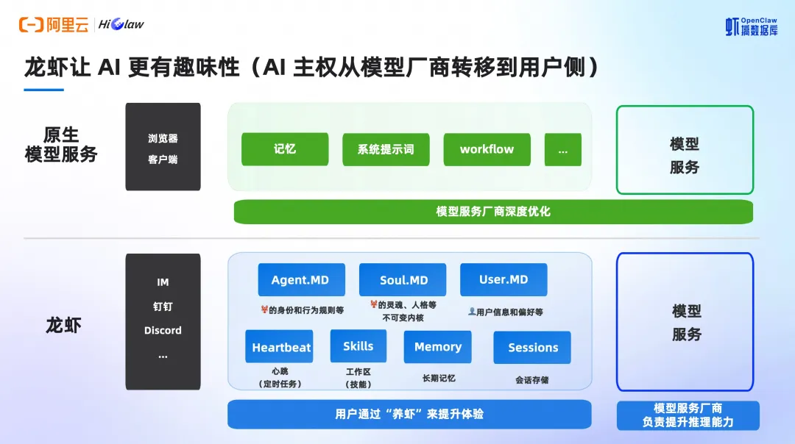
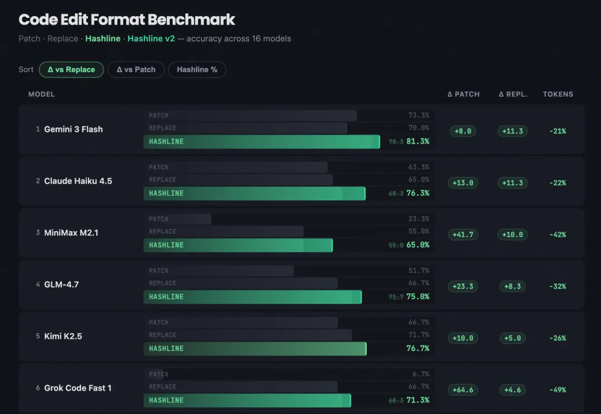
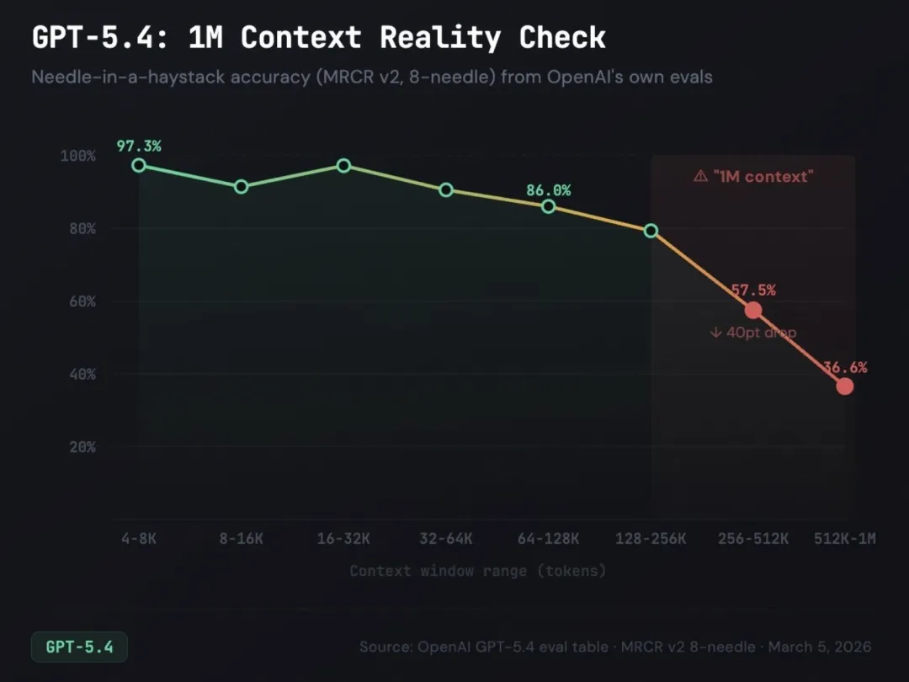
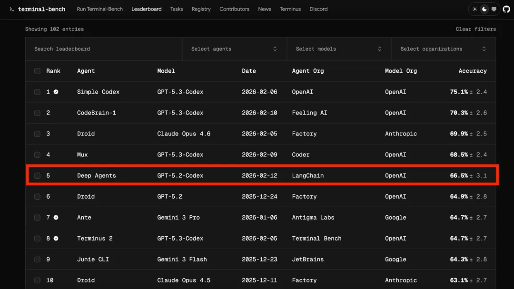
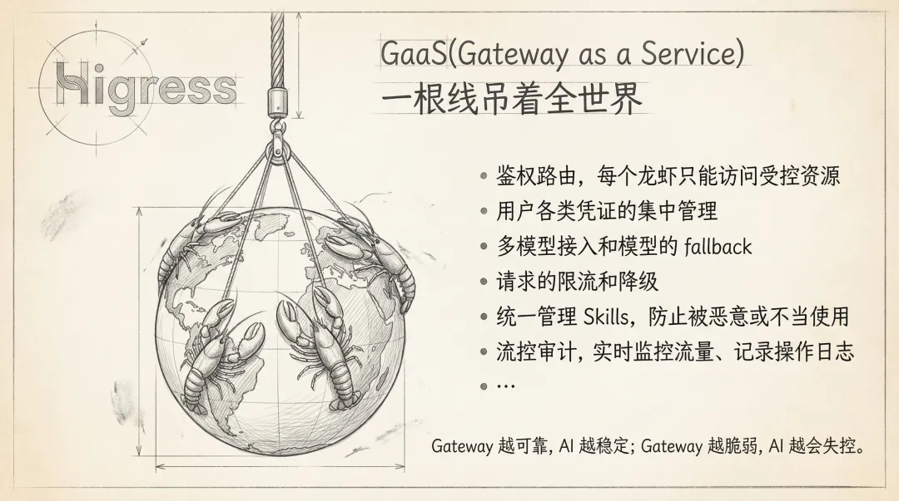
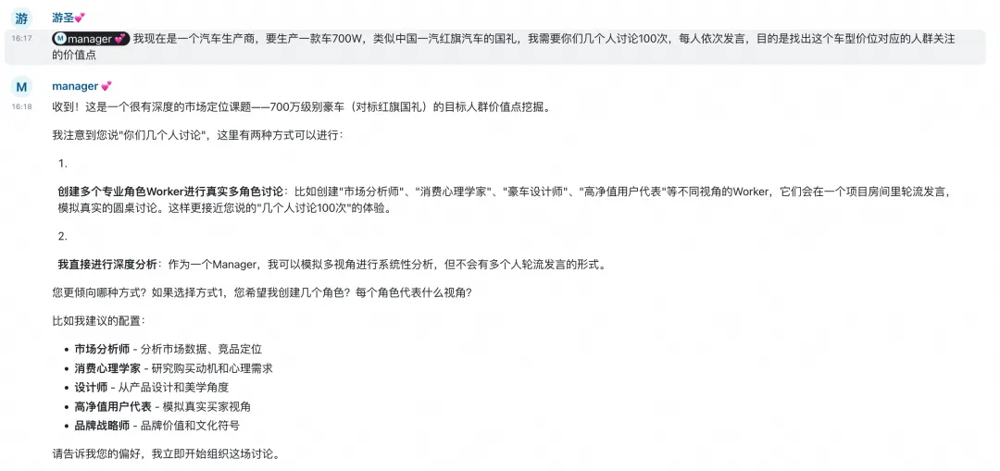
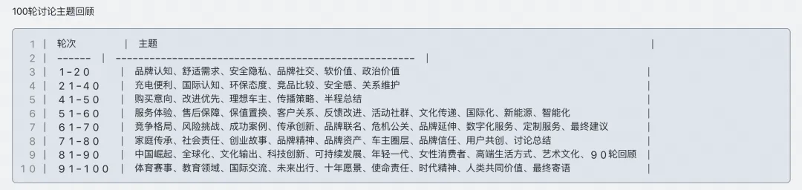

Harness Engineering 驾驭工程：从提示词工程到上下文工程之后的第三范式
Harness Engineering 驾驭工程：从提示词工程到上下文工程之后的第三范式
来源：微信公众号 归档日期：2026-04-07 抓取状态：成功 原文字符：9860｜配图：8 张
摘要速览
AI Agent 能力越来越强，但如何系统性地驾驭它、让它在真实工程中可靠运作？提示词工程解决"怎么说"，上下文工程解决"看到什么"，驾驭工程解决"整个环境如何运作"。
核心内容
- 三阶段演进：提示词工程（怎么跟模型说话，单次交互）→ 上下文工程（让模型看到什么，Builder 视角）→ 驾驭工程（整个运行环境如何运作，用户重新掌权）。驾驭工程的兴起和 OpenClaw（开源命令行 Agent）将 AI 主权从厂商转移到用户手中密切相关——权责对等，拥有调试权也需要学会驾驭。
- 案例一·编辑工具决定模型表现：开发者 Can Duruk 发明 Hashline 方案（文件每行附带内容哈希标签，模型编辑时引用标签而非复现原文），16个模型几乎全面提升，Grok Code Fast 成功率从 6.7% 飙升到 68.3%。核心洞察："你在怪飞行员，但问题出在起落架上。"
- 案例二·技术债被 Agent 指数级放大：一个临时妥协（绕过 Service 层、硬编码魔法数字），Agent 会系统性地当作"先例"复制到代码库每个角落。人类知道烂代码是地雷要绕走，Agent 不会。OpenAI 的解法：将"品味"编码为自动化规则，用清理 Agent 像垃圾回收器一样持续清理，而非每周五集中还债。
- 案例三·子 Agent 作为"上下文防火墙"：Agent 上下文窗口随工作推进"腐烂"，膨胀到一定程度进入"笨蛋区"。解法：父 Agent（贵模型如 Opus）负责规划编排，子 Agent（便宜模型如 Sonnet）在隔离上下文中执行具体任务，只返回压缩结果，中间过程不污染父级。阿里开源的 HiClaw 也用 Manager-Workers 架构实现类似效果。
- 案例四·反馈回路重新设计："成功应该沉默，只有失败才应该发出声音。"4000行通过的测试输出涌入上下文反而让 Agent 产生幻觉。正确做法：通过测试→完全静默；失败→只输出错误信息。加上循环检测（改同一文件 N 次后提示换思路）和强制验证（交卷前对照需求检查），LangChain 的 Agent 从 Terminal Bench 前 30 跃升到前 5。
- 群体智能是下一步：CLI-Anything（把任意 GUI 软件自动生成 CLI 接口，让 Agent 调用真实应用后端）+ HiClaw（Manager-Workers 架构，每个 Worker 独立 Skills/记忆/模型，引入 MinIO 文件共享降低 Token 消耗，Higress AI Gateway 做鉴权路由和安全管控）。个人效率提升是线性的，群体智能涌现是指数级的。
可执行启发
（待补充）
我的想法
（待补充）思考方向：
- 自己的知识库 Agent 体系（董事长→总经理→主管）本质上就是"上下文防火墙"模式，能否借鉴"成功沉默/失败发声"的反馈回路设计来优化？
- "技术债被 Agent 指数级放大"这个洞察对内容创作也有启示——如果给 Agent 看到的"先例"质量不高，它会系统性复制低质量模式
为什么有用
- 提供了一个完整的认知框架：从提示词→上下文→驾驭，理解 AI 工程范式的演进方向
- 4个案例都是直接可用的实践经验：Hashline、技术债治理、上下文防火墙、反馈回路设计
- 对自己做 Agent 架构（包括知识库的 Agent 体系）有直接参考价值
具体步骤
- 编辑工具优化：考虑为 Agent 设计更好的代码编辑接口（如 Hashline），而非依赖 str_replace 或 diff
- 技术债治理：将代码规范编码为自动化规则，用清理 Agent 持续巡检，不要等技术债累积
- 上下文防火墙：复杂任务用父子 Agent 架构，父级规划+子级执行，隔离上下文避免"笨蛋区"
- 反馈回路：成功沉默/失败发声；加循环检测和强制验证中间件
- 群体智能：关注 CLI-Anything（github.com/HKUDS/CLI-Anything）和 HiClaw（github.com/alibaba/hiclaw）
适用 / 不适用场景
- 适用：Agent 架构设计、多 Agent 协同、AI 工程实践、企业级 Agent 部署策略
- 不适用：纯提示词技巧层面（这篇是工程架构层面的思考，不教你写 prompt）
原文沉淀
目录
阿里妹导读
OpenClaw 将 AI 主权从模型厂商转移到了用户手中，但调教 AI 并不是一个简单的事情，甚至让人烦躁。这一背景加速了 Harness 驾驭工程的市场共识。
📌 Harness 一词来源于马具。马是强大的 AI 模型，但因其黑盒属性具有不可控性；Harness 是指缰绳、马鞍和护具等，是工程管理学；骑手是人类工程师，明确意图、设计环境和构建反馈回路。
你的客厅里来了一条龙
2026 年 2 月，OpenAI 发布了一篇名为《Harness Engineering: Leveraging Codex in an Agent-First World》的技术博客[1]。文章披露了一个惊人的实验：一个仅由 3 名工程师（后扩展到 7 人）组成的团队，在 5 个月内用 Codex Agent 生成了超过 100 万行生产级代码，合并了约 1500 个 Pull Request，没有一行代码是人类手写的。但这篇文章真正引爆行业讨论的，不是“AI 写了 100 万行代码”这个数字本身，而是它提出的一个全新工程范式：Harness Engineering（驾驭工程）。
正如 Medium 上一篇广为流传的文章所比喻的：我们的客厅里来了一条龙。它聪明、强大，目前看起来还算温顺。但龙会长大，我们需要的不是更粗的铁链，而是一套完整的驾驭系统，包括缰绳、马鞍、护具等，以及一个懂得如何与龙共处的骑手。
工程演进：提示词、上下文、驾驭
为了更深刻的理解 Harness Engineering（驾驭工程），让我们把视野拉长到更宏大的技术史尺度上：
▍工业革命：驾驭物理力量
蒸汽机释放了远超人类肌肉的物理力量。但蒸汽机本身不知道该驱动什么、转多快、何时停。于是，人类发明了飞轮调速器、安全阀、传动系统等，这些就是工业革命时代的“Harness”。没有这些，蒸汽机只是一个危险的热水壶。
▍信息革命：驾驭计算力量
计算机释放了远超人类大脑的计算力量。但裸机不知道该算什么。于是，人类发明了操作系统、编程语言、软件工程方法论，从瀑布模型到敏捷开发，从汇编到高级语言，每一步都是在构建更好的“Harness”来驾驭算力。
▍AI 革命：驾驭认知力量
大语言模型释放了远超人类个体的认知力量，它能自主规划、推理和生成。但模型本身不知道该解决什么问题、遵循什么约束、如何在真实世界中更可靠地运作。Harness Engineering 就是 AI 时代的操作系统和软件工程方法论的统一体，包括 Agent 范式下的记忆、系统提示词、知识库、编排等，以及 OpenClaw 范式下的文本流，例如 Agent.md、Soul.md、User.md 等，都是为了更好和模型对话。
Harness Engineering（驾驭工程）的出现，是 AI 驾驭系统开始成形的信号。但提到驾驭工程，我们不得不回顾下提示词工程和上下文工程。
▍提示词工程 Prompt Engineering
- 核心问题：怎么跟模型说话？
- 人类角色：用户精心雕琢每一句指令的措辞、格式、示例，试图从黑盒中诱导出正确答案。Few-shot、Chain-of-Thought、角色扮演……本质上是在一个固定的对话窗口里做文章。
- 局限：单次交互、无状态、高度依赖个人经验，更像是大师手艺，而非工程。
▍上下文工程 Context Engineering
- 核心问题：模型应该看到什么？
- 人类角色：角色发生了变化，从用户转化到 Agent Builder，Builder 们系统性地设计、构建并维护一个动态系统，在 Agent 执行任务的每一步为其提供恰当的上下文，包括知识库、工具调用、记忆管理……关注点从用户应该说什么转向 Builder 们让模型看到什么，从而让模型更懂用户。
- 2025 年 6 月，Andrej Karpathy 明确表态：上下文工程比提示工程重要得多。
▍驾驭工程 Harness Engineering
- 核心问题：整个环境应该如何运作？
- 人类角色：角色再次从 Agent Builder 手里交还到用户手里。通过设计完整的运行环境，包括约束、反馈回路、自动验证、熵管理、生命周期治理等。
- 笔者个人认为，驾驭工程能在这个阶段引发共鸣，和 OpenClaw 的出现，促使 AI 主权从模型厂商转移到用户侧有着紧密的关联。权责对等，拥有了调试 Agent 的权利，也需要学会 Harness，懂得和 Agent 相处。

图源：瑶池数据库举办的虾搞数据库杭州站
4 个案例进一步了解 Harness Engineering
读到这里，你可能会产生一个合理的怀疑：Harness Engineering 是不是只是把好的软件工程实践重新包装了一下？写好文档、做好反馈链路、跑好 CI，这些事情我们不是一直在做吗？这个怀疑值得认真对待。我们先来看 4 个真实案例。
▍案例一：一个编辑工具的改变，让 15 个模型同时变强
来源：Can Duruk, "I Improved 15 LLMs at Coding in One Afternoon", 2026.02[2]
独立开发者 Can Duruk 维护着一个开源编码 Agent 框架。他发现一个被很多人忽视的问题：Agent 修改代码文件的编辑工具本身就是一个巨大的失败源。
当前业界主流的编辑方式有三种：OpenAI 的 apply_patch（要求模型生成特定格式的 diff）、Claude Code 的 str_replace（要求模型精确复现旧文本的每一个字符）、以及 Cursor 训练的专用 70B 合并模型。每种方式都有严重缺陷，Grok 4 使用 patch 格式的失败率高达 50.7%。

他设计了一种叫 Hashline 的新方案：当模型读取文件时，每一行都附带一个 2-3 字符的内容哈希标签。模型编辑时只需引用这些标签，而非复现原始文本。
- - - - - -
// 模型看到的文件：
11:a3| function hello() {
22:f1| return "world";
33:0e| }
// 模型的编辑指令：
"replace line 2:f1 with: return 'universe';"结果：16 个模型、3 种编辑工具、180 个任务、每个任务 3 次运行。Hashline 在几乎所有模型上都匹配或超越了传统方案。最极端的案例是 Grok Code Fast 1，成功率从 6.7% 飙升至 68.3%，十倍提升！Grok 4 Fast 的输出 token 也下降了 61%。
传统软件工程中，人类用 VS Code 还是 Vim，是不影响代码质量的。但在 Agent 世界里，模型表达意图的接口设计会直接决定了它能否把正确的想法变成正确的代码。Can Duruk 的原话是：“你在怪飞行员，但问题出在起落架上。”
▍案例二：技术债的指数级放大效应
来源：AgentsMesh 开发者, "52 Days, 350K Lines Solo", Reddit r/ClaudeAI, 2026.03, From Reddit
一位独立开发者在 52 天内用 AI Agent 独自构建了 35 万行生产代码。他发现了一个传统开发中不存在的现象：技术债会被 Agent 指数级放大。
当你做了一个临时妥协，绕过 Service 层直接查数据库，或者用一个硬编码的魔法数字，Agent 会把这个模式当作“先例”。下次生成类似功能时，就不是偶尔复用，而是系统性地复用。人类工程师遇到烂代码通常知道“这是地雷，绕着走”。Agent 则不会，它看到代码库中存在某个模式，就把它当作合法方案。
当好的实践占主导时，Agent 放大好的实践；当捷径占主导时，Agent 放大捷径。
传统软件工程中，技术债是线性累积的，一个坏模式可能被几个人模仿，但传播速度受限于团队规模和代码审查。在 Agent 协作开发中，技术债变成了自我复制的病毒：一个坏模式可以在几小时内被 Agent 复制到代码库的每一个角落。
这就要求一种全新的“代码库卫生”策略，文章开篇提到的 OpenAI 实践：
定期运行的清理 Agent 像垃圾回收器一样，OpenAI 团队曾把每周五 20% 的时间用于清理“AI 垃圾”，后来发现这不可扩展，无法持续的对抗衰变。于是将“品味”编码为自动化规则。
这里的品味包括：
- 更倾向于使用共享的实用程序包，而不是手工编写的辅助工具，以便将不变式集中管理。
- 不会使用“YOLO 式”探测数据，会验证边界，或依赖类型化的 SDK，这样智能体就不会意外地基于猜测的结构进行构建。
- 会定期运行一组后台 Codex 任务，扫描偏差、更新质量等级，并发起有针对性的重构 Pull Request。其中大多数都可以在一分钟内完成审查并自动合并，其功能类似于垃圾回收。
技术债务就像一笔高息贷款：不断地以小额贷款的方式偿还债务，总比让债务不断累积，再痛苦地一次解决要好得多。人类的品味一旦被捕捉，就会持续应用于每一行代码。这也促使我们每天去发现并解决不良模式，而不是让它们在代码库中传播数天或数周。
▍案例三：子 Agent 作为“上下文防火墙”
来源：HumanLayer, "Skill Issue: Harness Engineering for Coding Agents", 2026.03[3]
HumanLayer 团队在大量企业级棕地项目中发现了一个核心问题：Agent 的上下文窗口会随着工作推进而“腐烂”。每一次工具调用、每一次文件读取、每一次 grep 结果，都会在上下文中留下残留。当上下文膨胀到一定程度，Agent 就进入了他们所说的“笨蛋区”，即使是简单任务也开始出错。
该研究提供了实证支撑：18 个模型在 Terminal Bench 2.0 的测试用例上的表现随上下文长度增加而显著下降，且当上下文中存在低语义相关性的干扰信息时，退化更加陡峭。

HumanLayer 的解决方案不是“加大上下文窗口”，而是引入子 Agent 作为“上下文防火墙”：
- 父 Agent 负责规划和编排，使用昂贵的高推理模型（如 Opus）。
- 子 Agent 在隔离的上下文窗口中执行具体任务，使用便宜的快速模型（如 Sonnet）。
- 子 Agent 只返回高度压缩的结果 + 源引用，中间过程不污染父 Agent 的上下文。
- 父 Agent 始终保持在“聪明区”，可以跨越数十个子任务维持连贯性。
阿里近期开源的 HiClaw 项目，采用的 Manager-Workers 架构，也可以认为是一种“上下文防火墙”，由 Manager 下发任务，每个 Worker 承担不同的职责，以避免记忆溢出或被污染，导致 Agent 进入“笨蛋区”。
传统软件工程中，上下文管理是人类大脑自动完成的，我们不需要担心读了太多代码文件后会忘记项目架构。但 LLM 的上下文窗口是一个有限且会退化的资源。子 Agent 或者多 Agent 提供的上下文防火墙模式是一种全新的架构模式，它不是微服务，不是消息队列，不是任何传统分布式系统概念的翻版。它解决的是一个只有在非人类认知体执行任务时才会出现的问题：如何在有限的注意力预算内，完成需要无限注意力的工作。
▍案例四：反馈回路的重新设计
来源：HumanLayer 的实践 + LangChain "Improving Deep Agents"[4]
HumanLayer 团队早期犯了一个看似合理的错误：每次 Agent 修改代码后，都运行完整的测试套件。结果 4000 行通过的测试输出涌入上下文窗口，Agent 开始对刚读到的测试文件产生幻觉，丢失了对实际任务的追踪。
他们总结出一条反直觉的原则：“成功应该是沉默的，只有失败才应该发出声音。”
他们为 Claude Code 编写了一个 Hook 脚本：当 Agent 停止工作时，自动运行格式化检查和 TypeScript 类型检查。如果一切通过，完全静默，不向上下文注入任何内容。如果失败，则只输出错误信息，并用退出码告诉 Harness 重新激活 Agent 去修复问题。
LangChain 的实践更进一步：他们设计了 PreCompletionChecklistMiddleware，在 Agent 试图交卷时拦截它，强制它对照任务规格做一次验证。同时用 LoopDetectionMiddleware 追踪对同一文件的重复编辑次数，在 N 次后注入“也许你该换个思路”的提示，帮助 Agent 跳出死循环。
结果是，LangChain 的编码代理在 Terminal Bench 2.0 测试中从前 30 名跃升至前 5 名。

传统 CI/CD 的反馈回路是为人类设计的：测试报告越详细越好，因为人类需要理解失败原因。但 Agent 的反馈回路需要对上下文窗口友好，信息量必须精确控制，成功信号要压缩到零，失败信号要精炼到最小可操作单元。更独特的是“循环检测”和“强制验证”，而人类工程师是不需要被提醒“你已经改了同一个文件 10 次了”，也不需要被强制在提交前对照需求文档检查一遍。这些是专门为非人类认知体的行为缺陷设计的补偿机制。
同一个模型，不同的 Harness，截然不同的结果。这 4 个案例说明了：Agent 竞争优势除了在你用了哪个模型，也在于你构建了怎样的 Harness。Harness 成了护城河，不只是 Agent Builder 们的护城河，更是 Agent User 们的护城河。
群体智能：企业业务创新的拐点
提效的故事已经不够性感，业务创新才是企业为 Token 付费的最强动力。
Harness Engineering 不仅旨在让单 Agent 更可靠地工作，也是用于优化多 Agent 间协作效果，通过群体智能加速业务创新。群体智能通过克服岗位间的知识孤岛、跨岗位协作导致的创意衰减等方式来提升业务创新力。
这一课题正在被一系列开源项目推向实践前沿。
▍CLI-Anything：群体智能的基础设施
来源：香港大学数据智能实验室（HKUDS），github.com/HKUDS/CLI-Anything
AI Agent 能推理、能写代码、能搜索，但让它打开 GIMP 去掉一张图的背景，或者用 Blender 渲染一个 3D 场景？它做不到。GUI 是为人类设计的，不是为 Agent 设计的。
CLI-Anything 是一个 Claude Code 插件，能分析任意软件的源代码，自动生成一套生产级的命令行接口（CLI），可以调用真实的应用后端，包括 LibreOffice 生成真正的 PDF、Blender 渲染真正的 3D 场景、Audacity 通过 sox 处理真正的音频等。
一条命令完成全部工作：/cli-anything <path-or-repo>，经过分析→设计→实现→测试→文档→发布的 7 阶段全自动流水线，输出一个可 pip install 的 Python 包。
每个生成的 CLI 都自带 SKILL.md，一份机器可读的能力描述文件。这意味着 Agent 可以在运行时自动发现其他 Agent 能做什么，动态组建协作关系。这就是群体智能的基础设施。
▍HiClaw：群体智能的操作系统
来源：阿里云，github.com/alibaba/hiclaw/tree/main
但 CLI-Anything 只解决了部分问题。
想象企业有了 10 多个关键部门，架构师、产品经理、前端开发、后端开发、市场、公关、供应链...每个部门的都有独有技能、知识库。然后你会发现基于单体架构的 OpenClaw 构建群体智能，会面临：
- 可扩展性差：使用者无法自由组合，无法按需引入新的 Agent，需要由运维团队或 AI 中台重新部署。
- 模型不自由：所有 Agent 只能使用默认的模型，无法自由替换对比效果。
- 越聊越贵、效果越聊越差：多个 Agent 在一个房间里协作，记忆越长，Skills 越多，越会被污染。
- FinOps 难落地：Token 消耗不可控，无法通过灵活使用模型、文件共享等方式，实施 FinOps，ROI 反正面临挑战。
这些，都是 HiClaw 会去解决的问题。
- 设计了 Manger-Workers 架构：使用者可以灵活创建代表各个角色的 Worker，还能引入企业自建 Agent 作为 Worker，所有 Worker 的 Skills 和记忆独立存储，避免污染。
- 每个 Agent 支持自定义：OpenClaw、Copaw、NanoClaw、ZeroClaw 以及企业自建的 Agent，从养虾到开虾场，每个 Agent 可以自由配置后端模型，例如代码生成使用百炼 Coding Plan、文本撰写使用本地 Qwen 开源模型，助力 FinOps。
- 引入 MinIO 共享文件系统：用于 Agent 之间的信息共享，大幅降低多 Agent 协作带来的 Token 消耗。
- 引入 Higress AI Gateway：实现鉴权路由（每个龙虾只能访问受控资源），凭证和访问安全（集中管理用户各类凭证、安全护栏），后端稳定（多模型接入和模型 fallback、限流和降级），Skills 统一管理，防止被恶意或不当使用，入口监控（QPS、鉴权失败率、Token 配额消耗、MCP 服务延迟）、安全审计（请求记录、操作日志记录等）。AI Gateway 的重要性见下图。

我们来看一个基于 HiClaw 构建的群体智能的实践案例。一家汽车生产商，计划生产一款 700w 的豪车，通过设计 N 个角色，由他们进行 100 次的讨论，给出一个结果。

案例中，我们选择了 3 位不同身份的目标用户，由他们进行自由讨论，在这 100 轮对话中，他们分别从品牌认知、舒适需求、安全隐私、品牌社交、软价值等多个方面进行激烈讨论。

由于内容较多，感兴趣的朋友，可以去以下地址进行围观。
https://github.com/alibaba/hiclaw/issues
Harness Engineering 是让企业拥有一支可编排、可治理、可持续进化的数字化智能团队。个人效率的提升是线性的，而群体智能的涌现是指数级的。CLI-Anything、HiClaw 这类开源项目正是 Harness Engineering 在群体智能下的探索和实践。
[1] https://openai.com/zh-Hans-CN/index/harness-engineering/
[2] https://blog.can.ac/2026/02/12/the-harness-problem/
[3] https://www.humanlayer.dev/blog/skill-issue-harness-engineering-for-coding-agents
[4] https://blog.langchain.com/improving-deep-agents-with-harness-engineering/
归属：[[02-输入/按主题/AI与效率/_index|AI与效率]]